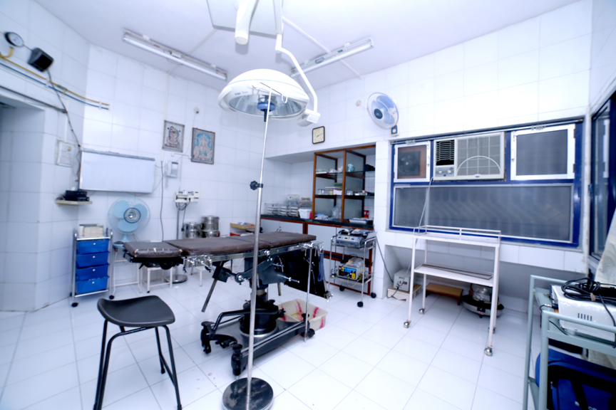
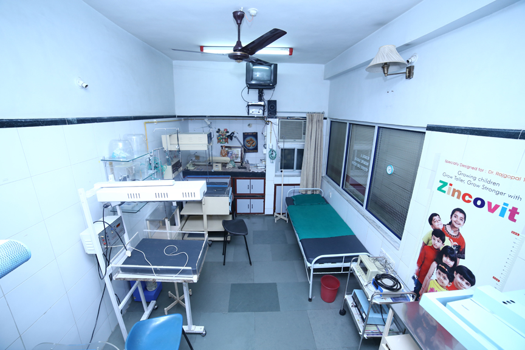
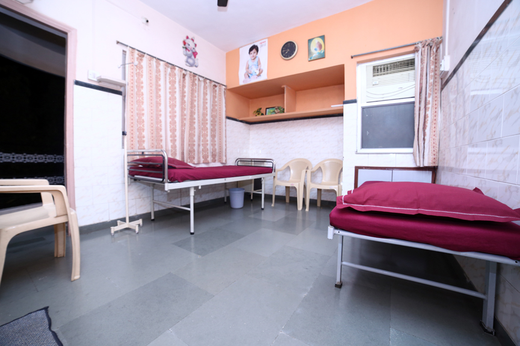
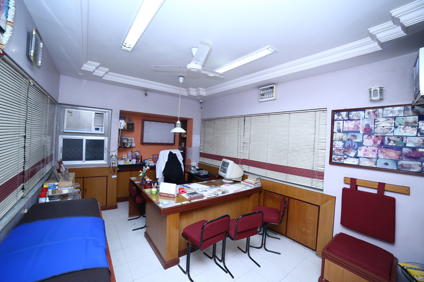
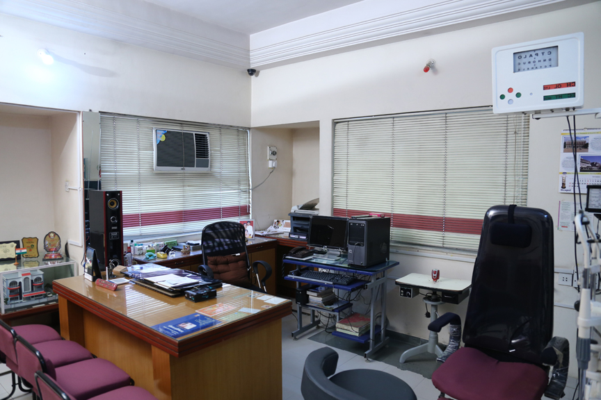

Our Story
To be updated soon. Back to Top
Welcome to Totla Hospital! We're a super-specialty hospital in Aurangabad, Maharashtra. We offer state of the art care in Paediatric Surgery, Paediatric Urology, and Ophthalmology. We have served the Marathwada area and adjoining districts for 25 years.
Dr. Rajgopal Totla, and Dr. Mrs. Santosh Totla are well known in the area not only for their technical expertise, but also their compassion and care. Over the years, Totla Hospital has become synonymous with excellence.
We're a super-specialty hospital in Aurangabad, Maharashtra. We offer state of the art care in Paediatric Surgery, Paediatric Urology, and Ophthalmology.
We're proud to be celebrating our 25th anniversary on December 18th, 2016!
At Totla Hospital, we offer state of the art care in Paediatric Surgery, Paediatric Urology, and Opthalmology for all age groups.
Paediatric Surgery and Paediatric Urology |
||
Ophthalmology |
||





We're centrally located in Aurangabad, and easily reachable via a variety of modes of transport. We're within 20 minutes of driving time from both the Aurangabad airport and railway stations. The best way to set up an appointment is to call in advance.
Address:We are open from 11am to 7pm on weekdays, and 11am to 5pm on Saturday. For emergencies, we are open 24/7.
Back to Top